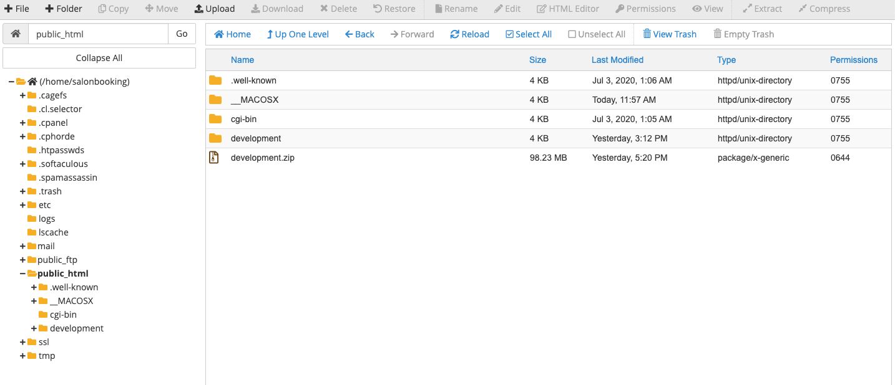
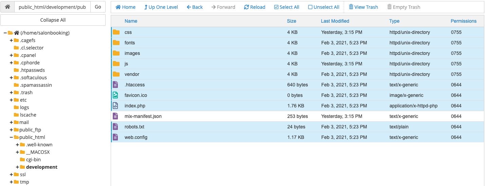
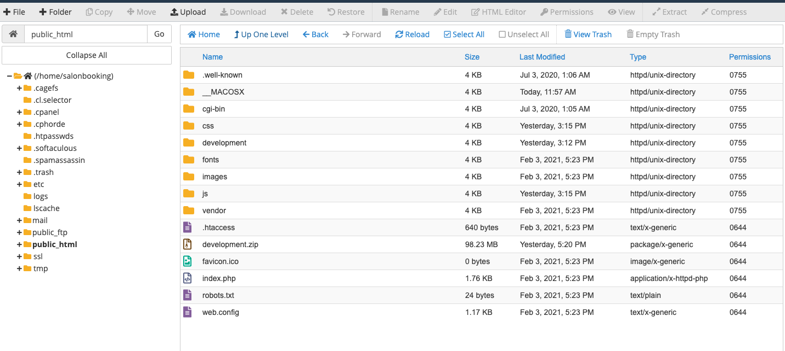
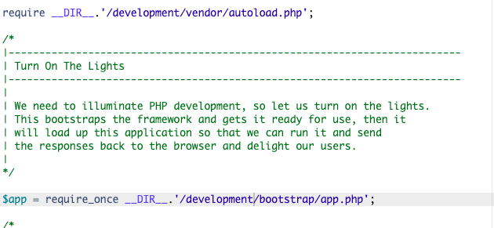
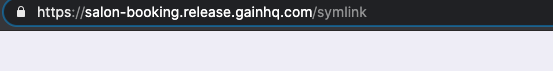

Server requirements
- PHP = 8.0 or 8.1
- OpenSSL PHP Extension
- PDO PHP Extension
- GD PHP Extension
- Mbstring PHP Extension
- Tokenizer PHP Extension
- XML PHP Extension
- Ctype PHP Extension
- JSON PHP Extension
- ZIP PHP Extension
- BCMath PHP Extension
Development Requirements
- PHP = 8.0 or 8.1
- Node.js: 14.x to 16.x
- npm 6+
- Composer
- Terminal permission to run command
- Symlink (Storage Permission)
How to Configure Locally
-
You will get two folders.
- development
- documentation
- Go to the development folder, you will find all the development files.
- Copy all the content from .env.example and then paste it on .env file.
-
Open terminal on the development root folder and write
composer installand press enter. -
After completing the composer installation write
php artisan key:generateand press enter. It will generate APP_KEY -
Configure your database to provide database credentials.
 Open terminal and run the below commands
Open terminal and run the below commands
-
php artisan migrate -
php artisan db:seed Or php artisan migrate:fresh --seed -
php artisan storage:link -
After completing the database migration you should run
yarn installornpm installand press enter. -
Then run
yarn watchornpm run watch. -
php artisan optimize:clear -
Serving Laravel: If you want to use PHP's buit-in development server, you may use the
php artisan serve. By default the HTTP-server will listen to port 8000. You can also change the port by adding--portargument likephp artisan serve --port=8080.
If you find a blank page please run
php artisan optimize:clear and try again.
How to Configure on Server
You can see that we are not giving you the vendor & node_modules folder. When you install
laravel via composer you will find the vendor folder. That's why we are giving you this
composer install command. Using this command you will get all the laravel
dependencies. Another command is npm install or yarn install which will
give you node_modules. These are the package dependencies manager.
When you want to upload readykit development folder you need to follow all the "How to configure locally" steps. Then make a zip file and upload it on your server. Please follow the the instructions which is given bellow
- Upload your zip on server and extract it. Like these 
- Create a database on server.
- Make a database user.
- Add user to database with all privileges.
-
Configure your database to provide database credentials on
.envfile.
-
Now you need to restructure something. Go to your
development/publicfolder and select all withoutmix-manifest.json. Make sure that you are showing all hidden files.  -
Move all the selected files and folders to your root where your zip extract like
development -
Now you need to edit your
index.phpfile. When you open it you will see something like these.
We just redirect our require path. Here our require path isdevelopment. So we just change/../to/development/and save. Image given below.  -
Now open your browser new tab and browse your url. Then you will find a migration error
because your database are not migrate yet. In your url bar write
/install-demo-datait will migrate and seed all the data. And also clear all the cache, config, view etc. Image given bellow.
It will return1. After that delete/install-demo-datafrom your url bar and press enter. -
Final step we need to make
symlinkwith storage folder. Just write/symlinkin url bar.
